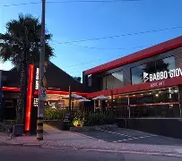
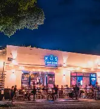
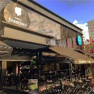
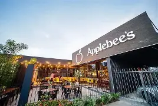
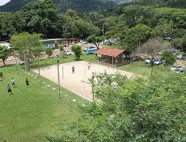

Restaurantes / Bares / Gastronomia
-

-

Babbo Giovanni Pizzaria
Pizzas tradicionais e rodízio animado nos finais de semana.
📍 Ver localização - 
-

Botequim da Francisca
Bar descontraído, porções e pratos para encontros informais.
📍 Ver localização - 
Praças, parques, espaços ao ar livre
-

- 
Hotéis
-
Grand Hotel Royal Sorocaba
Hotel central, padrão elevado e ótimo acesso a restaurantes.
📍 Ver localização -
ibis Sorocaba / ibis Styles
Econômico, confortável e prático para quem quer gastar menos.
📍 Ver localização